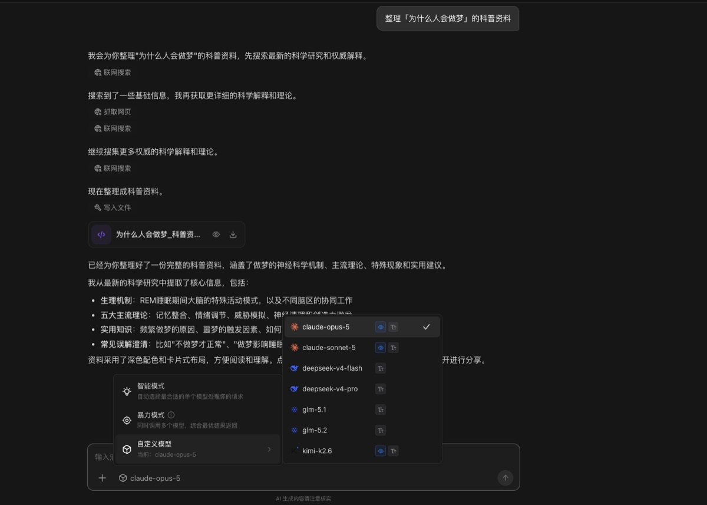

自由模式 · 使用教程
无痛使用
Claude
不用海外账号，不用外币卡。
网页里直接聊，也能用 API 调用。
Lucimix
无痛使用 Claude：不用海外账号和外币卡，网页对话、API 调用都能用
想用 Claude 的人，大多卡在同一个地方：要注册海外账号，开会员要外币卡，好不容易开通了，还可能被封号。
这篇讲一个更省事的办法：在 Lucimix 里直接用。
Lucimix 是什么
Lucimix 是一个 AI 工作台，接入了国内外主流大模型，Claude、DeepSeek、GLM、Kimi 等都在里面。
- 一个账号：不用分别注册各家的账号。
- 统一用光点计费：微信、支付宝扫码就能充值，不需要外币卡。
- 两种用法：网页里直接对话，或者用 API Key 接到你自己的工具里。
用法一：网页里直接和 Claude 对话
- 1注册登录：打开 Lucimix 官网注册。新用户通过好友邀请注册，可得 1000 光点。
- 2切到自由模式：在个人助手的输入框下方，把模式切换为「自由模式」。
- 3选择 Claude：点模型名，在列表里选 Claude，比如 claude-opus-5 或 claude-sonnet-5。
- 4开始提问：和平时聊天一样用就行。

配图待补：选中 Claude 后的一段对话截图
同一个对话里，随时可以换成别的模型，前面聊过的内容都在，不用重新交代。
用法二：用 API 调用 Claude
如果你在写代码，或者想把 Claude 接到自己常用的工具里，可以用 Lucimix 的 API：
- 1创建 API Key：在 Lucimix 后台生成一个 API Key。
- 2按 OpenAI 兼容格式调用：大部分支持自定义 OpenAI 接口的工具和代码，填上接口地址和 Key 就能用，模型名填 Claude 对应的名称。
- 3看用量：后台实时统计用量，和网页对话一样走光点结算。
调用示例（Python）from openai import OpenAI
client = OpenAI(
base_url="【Lucimix API 地址】",
api_key="【你的 API Key】",
)
resp = client.chat.completions.create(
model="【Claude 模型名】",
messages=[{"role": "user", "content": "用三句话介绍一下你自己"}],
)
print(resp.choices[0].message.content)
配图待补：Lucimix 后台创建 API Key 和用量统计的截图
适合谁
- 听说 Claude 写长文、改稿、写代码好用，一直想试但开不了号的人
- 不想为几个 AI 分别开会员、分别充值的人
- 想在自己的工具或项目里调用 Claude 的开发者
想用 Claude，不用再折腾账号和支付。